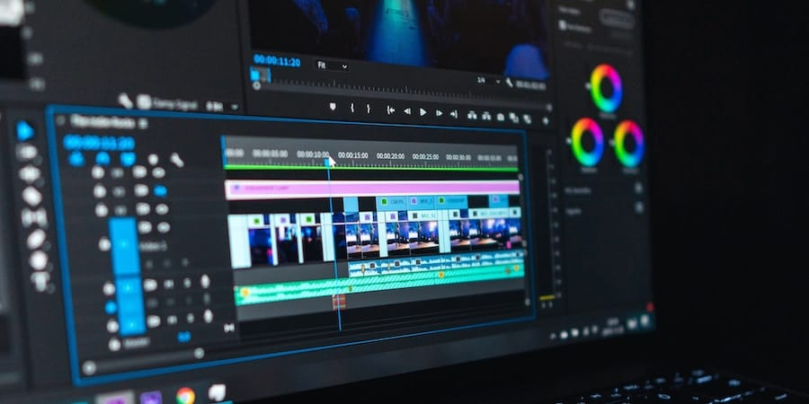
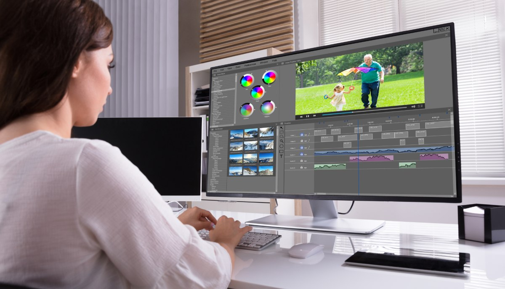
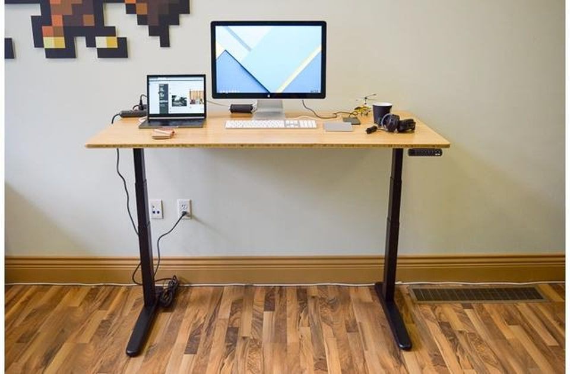
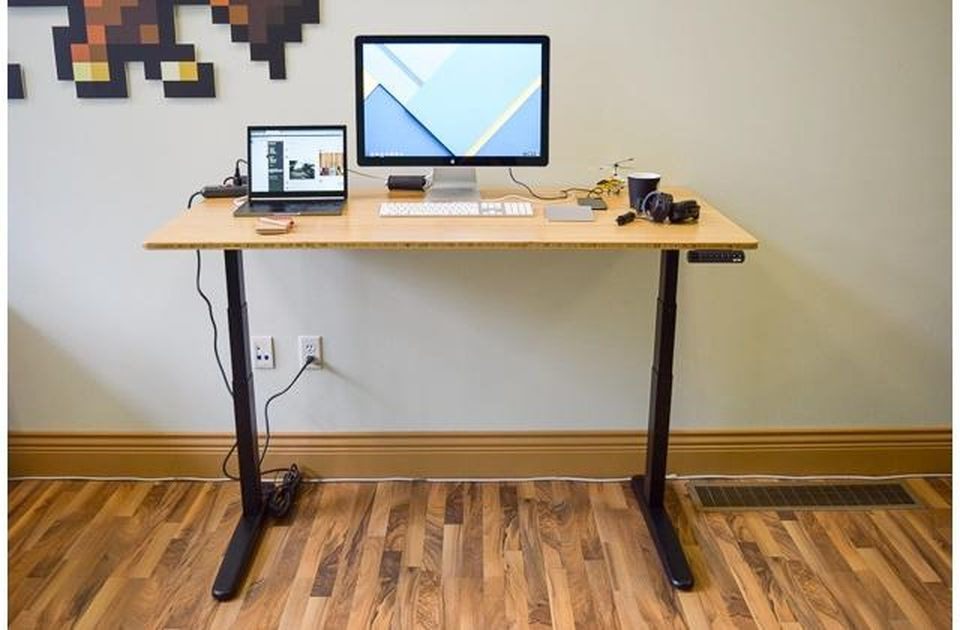

How To Choose The Right Computer!
Blog Home Page!
If you are looking at this section you are probably wondering, why should I invest
in a gaming PC? In my personal opinion I think that gaming PCs are the best bang for your buck
and here is why. Gaming computers can pretty much do anything that you need to do like video-editing,
playing games (obviously), research papers and so much more! Now, this all depends on the components that you
have in your computer. If you want to use your new gaming computer for some gaming and do other things well, then I suggest you
look at the section where I talk about my experience building my first computer. If you are interested in building a gaming
pc then you are probably like me and love video games. Here is one of my favorite quotes from one of my favorite games "Don’t ever stop. Always keep going,
no matter what happens. Even when life is so unfair, don’t give up." -Ezio (Assassins Creed 2)
Having a computer for multi-media is not as expensive as you would think but it would be a good chunk of change. Just like a good gaming PC, a computer used for video-editing, streaming, or just a lot of processing power is going to be a hefty price. The reason being that you would need to have a good CPU in order to handle all of that processing power. If you are looking into buying a good CPU, I would recommend getting an Intel core I7 or higher because intel's chips are much better for media consumption than AMD. Building this type of computer is good because you can also do pretty much anything that you desire. If you want to play games eventually on this computer you more than likely can considering that you buy a good graphics card and monitor to play if you want good graphics and fps. If you don't want any of these options then I would recommend going to the last section of this blog.

If you are reading this section of the blog, then you probably are not a big gamer or into media consumption. Building an office computer is quite easy and more than likely the cheaper option of the three. With an office computer, you can compromise to some areas of your build or if you buy one, for example, you can upgrade to a really nice CPU and not have a an expensive GPU or motherboard. Even so, you can use a cheap CPU and it will still do very well for any kind of work that you may be doing on this computer like surfing the internet and writing papers. This option is the best choice if you are on a budget and don't need anything that is overly demanding like video games or media consumption.
 
